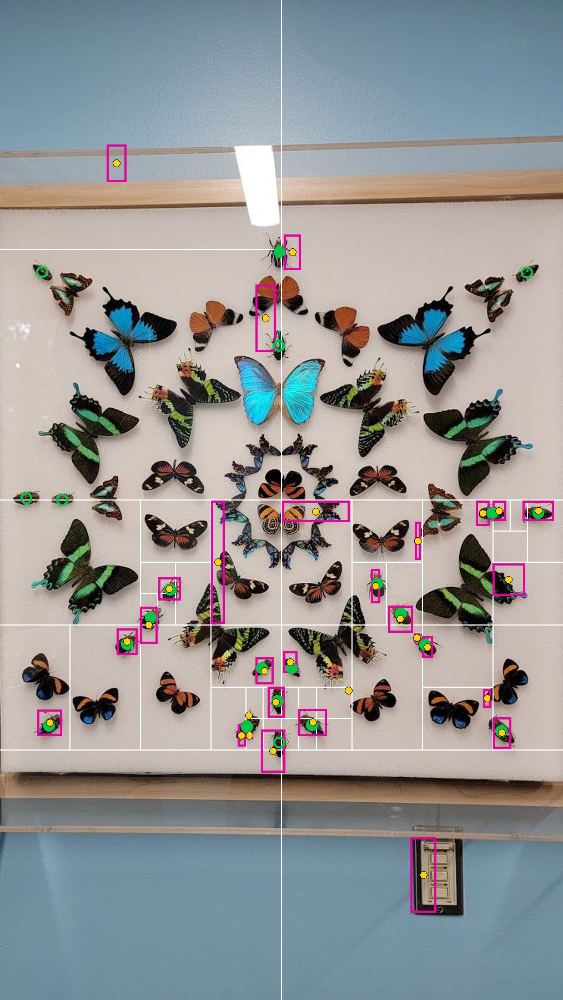
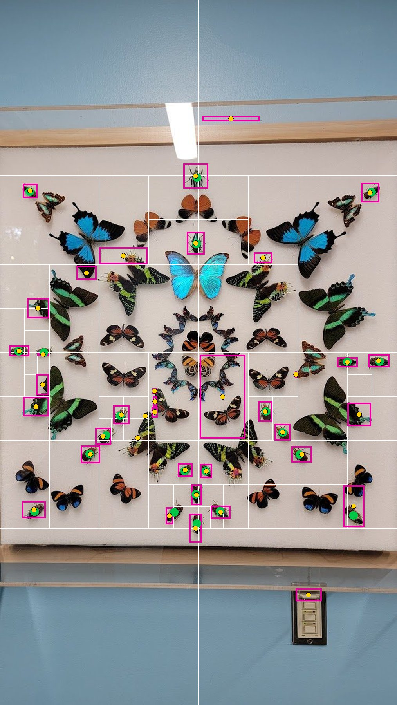
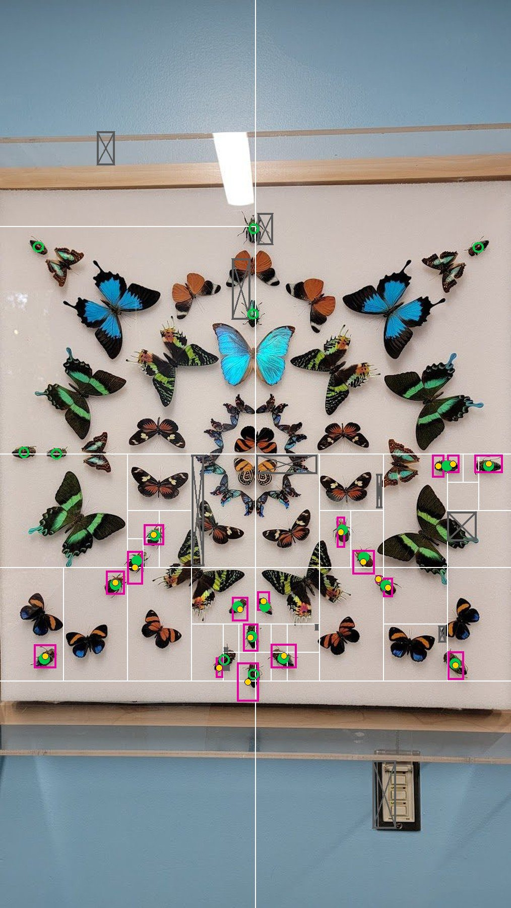
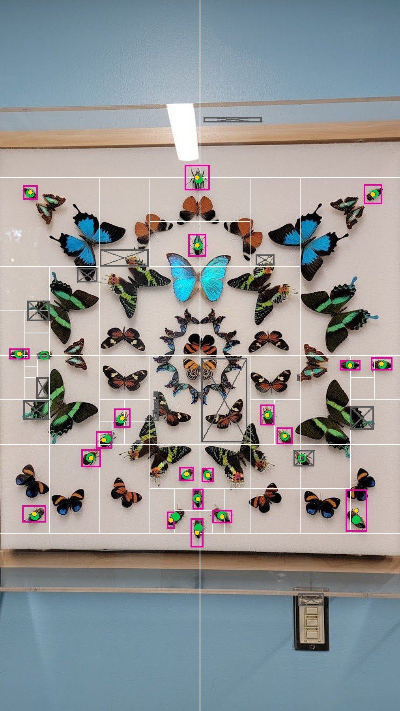

average 52.7% · shown: 54% · 16 of 22 beetles found · 14 extra · 30 boxes
whole try: 150 questions, 4.1 s, $0.0047

Same search on both sides; only the size small pieces are enlarged to before being sent differs. Every picture has its own try buttons. All four start on their column's middle try after the check, so each column starts with the same try top and bottom (the check runs on that try's boxes).
box (kept) rejected by the check (grey, crossed) found again after a rejection point scored beetle found beetle missed · thin white lines: cuts
the halving's boxes
average 52.7% · shown: 54% · 16 of 22 beetles found · 14 extra · 30 boxes
whole try: 150 questions, 4.1 s, $0.0047

average 70.9% · shown: 69% · 22 of 22 beetles found · 16 extra · 38 boxes
whole try: 220 questions, 5.8 s, $0.0239

each box shown to Jev again close up: "is this a beetle?"
average 65.4% · shown: 65% · 14 of 22 beetles found · 4 extra · 18 boxes
whole try: 150 questions, 4.1 s, $0.0047

average 88.4% · shown: 89% · 20 of 22 beetles found · 0 extra · 20 boxes
whole try: 220 questions, 5.8 s, $0.0239
